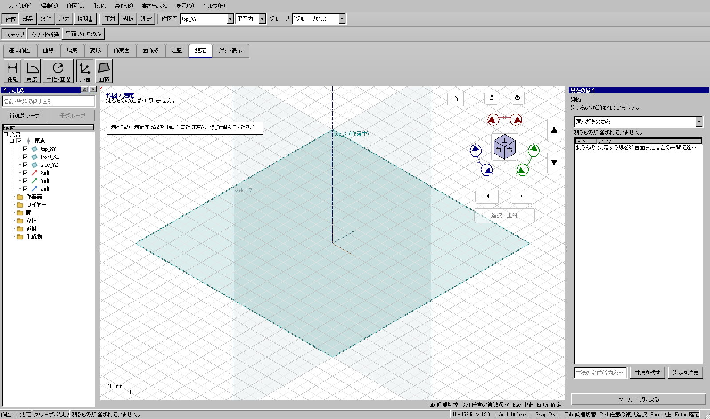
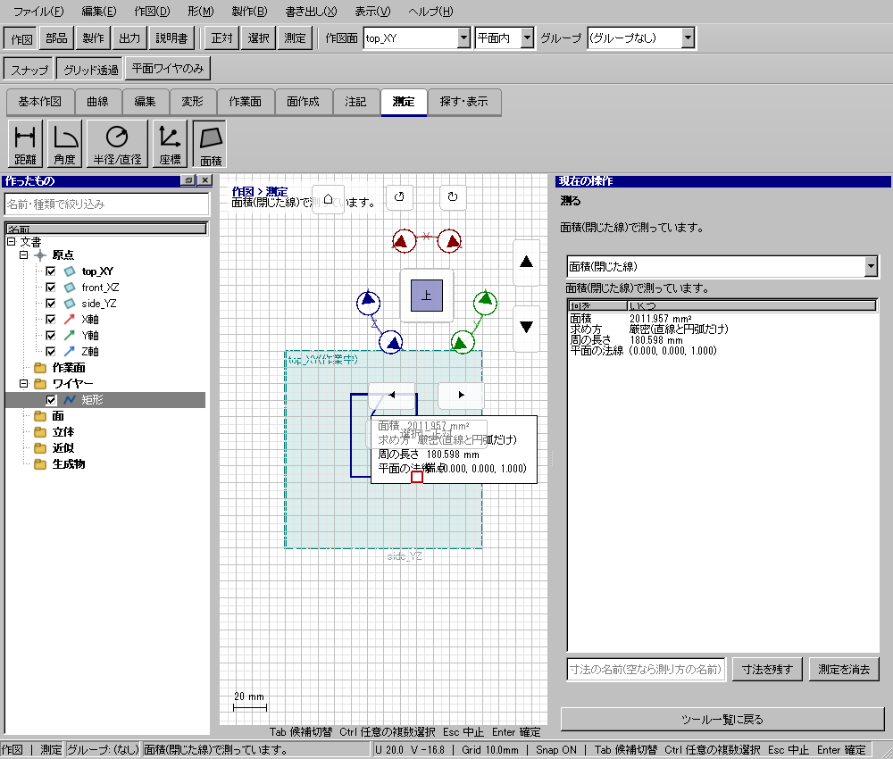

2点間の3D距離を調べる
2点間の3D距離を調べる
使う機能：測定
測定は形状を変えません。距離なら2点、角度なら3点で第2点が頂点です。右ペインの数値と3D表示を見て、必要なら測定を消去します。
右ペインと3Dビューに距離を表示する。測定では形状を変更しない。
1 準備 — 元の図形から作る
点(0,0,0)と(3,4,0)を作る。
まだ用意できていなければ、次の手順を先に行ってください。既にモデルがある場合も、例の座標・大きさ・面の向きを自分のモデルへ読み替えます。
- 指定座標の直線・円・円弧を準備する — 図形の作成から順に練習できます。
- 幅20・高さ10mmの閉じた矩形を作る — 図形の作成から順に練習できます。
- 線・面・部品を取り違えずに選ぶ — 図形の作成から順に練習できます。
練習前にKCD2を別名保存します。数値の長さはmm、角度は度です。平面内のu/vと世界XYZを区別します。
2 使う道具を開く — 押す場所
- 作図 → 測定 → 距離／角度／半径・直径／座標／面積
別の入口：Ctrl+K → 測定を検索 → 候補の用途を確認して開きます。別モードなら「全モードから探す」をオンにします。

3 操作手順 — 一つずつ進める
1 測定を開く
この段階で確認：この操作で使う入力：点(0,0,0)と(3,4,0)を作る
2 2点間を選ぶ
この段階で確認：使う対象・値：期待距離5mm
3 2点を順に追加する
この段階で確認：右ペインと3Dビューに距離を表示する。測定では形状を変更しない。
4 設定する欄と数値
ボタン名・欄名と、今回使う値を対応させてください。項目が出ていない場合は作り方・モードが合っているか確認し、ペイン内をスクロールします。
| 見る欄・役割 | この例の設定と意味 |
|---|---|
| 距離例 | 0,0,0と3,4,0で5mm |
| 角度例 | 10,0→0,0→0,10で90° |
| 面積例 | 20×10で200mm² |
選択の確認：役割欄の名前と3Dの強調を照合します。重なって拾いにくい時はTabで候補を替えます。全体を使う例では左一覧の要素名を選び、3Dの1辺選択と区別します。

この実画面は既存操作試験の一場面で、下の数値例の完成画像とは限りません。設定・選択の操作画面。具体的な完成例は段階写真のある作業例を参照してください。
5 確定して結果を確認
必要な要素・点・測定位置を指定すると数値が表示されます。測定だけで形状を確定するEnter操作は不要です。
右ペインと3Dビューに距離を表示する。測定では形状を変更しない。
形を作る操作では、元と結果の名前を分けて一覧で確認し、必要に応じて元を一時非表示にします。表示だけの機能では形状や要素数を変えることが目的ではありません。
6 取消・やり直し・保存
測定を消去で現在の測定を消します。保存済みの寸法注記を消す操作とは別です。
モデルの編集正本はKCD2、説明書の編集正本はKCIです。外部へ出力するだけの機能では、出力ファイルと編集元を両方残してください。
進めない場合 — 症状から戻る場所を探す
| 起きていること | 確認して直す場所 |
|---|---|
| 値が出ない | 種類ごとの必要入力数と対象を確認 |
| 面積を寸法で残す | 面積の保存寸法化には未対応 |
この機能の入力条件：距離や角度を測ります。測った場所から作図点を作れます。
計算中は処理表示を見ます。失敗が出たら、対象・入力条件を変えずに何度も押すのでなく、案内にある対象と条件を確認します。
別の方式・条件で使う
選択・座標
まず主手順で入力の役割を確認し、この例の値と操作へ置き換えます。
この例の準備：始点(3,4,0)の直線
選んだものからの測定で直線を選び、始点・終点の世界XYZを読みます。作業面のu/v入力と、表示される3D座標を混同しません。
- 選んだものから
- 直線を選ぶ
結果の見分け方：始点・終点座標を表示
この実画面は既存操作試験の一場面で、下の数値例の完成画像とは限りません。方式間で共通の入力欄を確認する参考画面です。この方式・上記の数値で確定した結果の画像ではありません。
2点距離
まず主手順で入力の役割を確認し、この例の値と操作へ置き換えます。
この例の準備：点(0,0,0),(3,4,0)
距離へ切替し、0,0,0と3,4,0を順に指定します。必要な点は座標直線の端点として準備できます。長さ5mmと成分3/4/0が合うか確認します。
- 2点間
- 2点を順に指定
結果の見分け方：5mmを表示
この実画面は既存操作試験の一場面で、下の数値例の完成画像とは限りません。方式間で共通の入力欄を確認する参考画面です。この方式・上記の数値で確定した結果の画像ではありません。
角度
まず主手順で入力の役割を確認し、この例の値と操作へ置き換えます。
この例の準備：3点(10,0,0),(0,0,0),(0,10,0)
10,0→0,0→0,10を指定します。2番目が頂点です。90度にならない場合は点の順序と奥行きを確認してください。
- 3点角度
- 始点・頂点・終点を指定
結果の見分け方：90度を表示
この実画面は既存操作試験の一場面で、下の数値例の完成画像とは限りません。方式間で共通の入力欄を確認する参考画面です。この方式・上記の数値で確定した結果の画像ではありません。
要素の寸法
まず主手順で入力の役割を確認し、この例の値と操作へ置き換えます。
この例の準備：半径5mmの円
R5円を選び、さらに円周上の測定位置を押します。半径の数値だけでなく、その位置の接線や法線を読む種類です。
- 要素
- 円を指定
- 円周上の測定位置を押す
結果の見分け方：接線・法線・半径5mmを表示
この実画面は既存操作試験の一場面で、下の数値例の完成画像とは限りません。方式間で共通の入力欄を確認する参考画面です。この方式・上記の数値で確定した結果の画像ではありません。
面積
まず主手順で入力の役割を確認し、この例の値と操作へ置き換えます。
この例の準備：20×10mmの矩形
20×10矩形を閉輪郭として指定し200mm²を確認します。曲線を刻む場合は近似の注記を読みます。面積を保存寸法へ残す機能とは別です。
- 面積
- 閉輪郭を指定
結果の見分け方：200mm²を表示
この実画面は既存操作試験の一場面で、下の数値例の完成画像とは限りません。方式間で共通の入力欄を確認する参考画面です。この方式・上記の数値で確定した結果の画像ではありません。
参考画面の出典と確認範囲
試験名：HP-ME-02 面積は帯の測定から閉じた線の全体を測り厳密と言い寸法には残さない。試験全体の結果：passed。画像はコマンド呼出し直後で、入力待ち・下見の場合もあります。各段階の完成証拠ではありません。